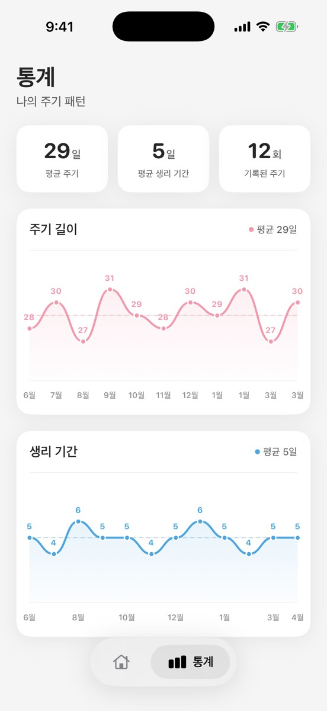

예측 한계
생리 앱 예측이 유용한 순간과 그렇지 않은 순간
달력 예측은 확실하지 않아도 유용할 수 있습니다. MiniCycle은 필요한 날짜를 보여주되 한계를 숨기지 않습니다.

계획에는 유용합니다
예측은 생리 예정일을 준비하고, 주기가 평소와 달라지는지 알아차리고, 과거 시작일을 기억하는 데 도움이 됩니다.
피임으로 쓰면 안 됩니다
달력 예측을 피임으로 사용해서는 안 됩니다. 가임 인지 기반 방법에는 구체적인 규칙과 꾸준한 관찰, 임신을 피하려는 경우 추가 피임이 필요할 수 있습니다.
진단이 아닙니다
늦거나 빠른 생리, 통증, 과다 출혈, 평소와 다른 출혈에는 여러 이유가 있습니다. 생리 앱은 날짜를 정리하는 데 도움을 줄 수 있지만 원인을 진단할 수 없습니다.